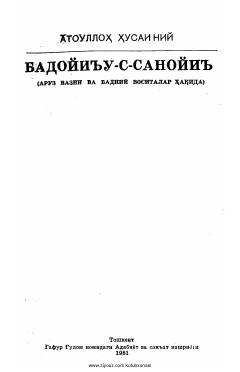

BSMumtoz adabiyotimizdagi badiiy sanʼatlar va aruz vazniga bagʻishlangan ilmiy risola.
Ushbu asar XV asr mutafakkiri Atoulloh Mahmud Husayniyning mumtoz adabiyotdagi badiiy sanʼatlar va aruz vazniga bagʻishlangan mashhur risolasidir. Kitobda sheʼriyatdagi turli sanʼatlar, poetik vositalar va ularning qoʻllanish xususiyatlari atroflicha tahlil qilingan. Alisher Navoiy davri adabiy muhiti va ilm-fan tarixi bilan qiziquvchilar uchun muhim manba hisoblanadi.